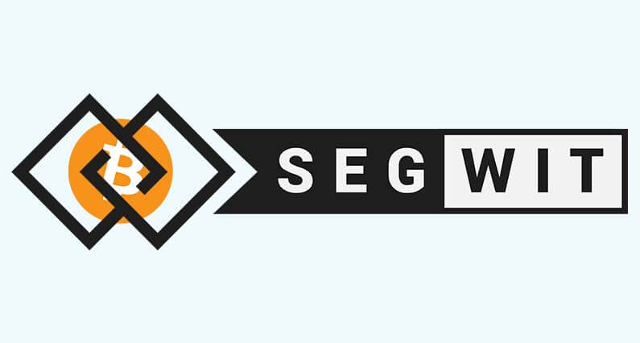

Megoldás Bitcoin bővíthetőségi problémáira I. rész: SegWit
SegWit, az a folyamat amelyben megnövelik a blokk méretét azáltal, hogy eltávolítják az aláírási adatokat a Bitcoin tranzakciókból. Amikor egy tranzakció bizonyos adatait eltávolítják, ez helyet szabadít fel, amely lehetővé teszi, hogy több tranzakció férjen a blokkba.
Tavaly Augusztusban Bitcoin fejlesztők bevezették SegWit-et a Bitcoin blokkláncon, ezáltal sokkal gyorsabbá és bővíthetőbbé téve a platformot.
A probléma
A probléma amivel Bitcoin már régóta küszködik, ahogy egyre több és több ember használja úgy egyre több blokkot kell hozzáadni a blokklánchoz. A blokkokat 10 perces időközönként generálják és maximum 1 MB méretűek lehetnek. Ennek a határnak köszönhetően csak egy bizonyos számú tranzakció fér bele a blokkba. A tranzakciók súlya nagyon megterheli a blokkláncot, ennek következményeként rengeteg a késés lép fel a tranzakciók feldolgozásában és ellenőrzésében. Egyes esetekben akár órákig is tarthat egy Bitcoin tranzakció megerősítése.
Mi az a SegWit?
Az egyik fejlesztés amelynek célja, hogy megoldja a blokk méretezési problémáját a SegWit protokoll. 2016-ban javasolta először a Bitcoin fejlesztői csapat. A SegWit protokoll kettéválasztja az eredeti blokkot, az eredeti blokkra és egy kiterjesztett úgynevezett 'witness' blokkra.
A SegWit protokoll kiveszi a tranzakció aláírásokat az eredeti blokkból és a 'witness' blokkba helyezi őket, ezáltal több helyet hagyva az eredeti blokkban. A blokk mérete ugyanakkora marad, azonban hatékonyabban több tranzakciót tud tárolni.
Az eredeti blokk továbbra is tárolni fogja a küldő és fogadó fél információit, míg az új 'witness' blokk tárolja az aláírásokat. Tehát lesz egy blokk csak a fejléccel ami a fogadó fél adatait tartalmazza és lesz egy kiterjesztett blokk ami az aláírásokat és nyilvános kulcsokat tárolja.
SegWit gyakorlatilag egy új gyors sáv létrehozása egy autópályán, hogy alkalmazkodjon a megnövekedett forgalomhoz.
SegWit Soft leágazásnak minősül, ami azt jelenti, hogy kompatibilis a régi kóddal, tehát visszafelé is kompatibilis az egész Bitcoin blokklánccal. Ez különbözik a Hard leágazástól ahol a szoftver nem kompatibilis a létező blokklánccal, ami így új kriptovalutát hozna létre.
A protokoll megnöveli kapacitását és megőrzi kompatibilitását az eredeti blokklánccal. 2017 Júliusában a világ legnagyobb bányászai beleegyeztek, hogy bevezetik a SegWit-et és ez Augusztusban meg is történt.
SegWit előnyei:
- Egy blokk több tranzakciót képes tárolni.
- Csökkenő tranzakciós díjak.
- Csökken az egyéni tranzakciók mérete.
- Gyorsabb tranzakció megerősítések.
- Segít Bitcoin bővíthetőségén.
- Segít Lightning Network aktiválásában.
SegWit hátrányai:
- Bányászok kevesebb tranzakciós díjat kapnak.
- A bevezetési folyamat komplikált és minden tárcának be kell vezetnie a SegWit támogatást.
- Növelni fogja az erőforrások használatát mivel a kapacitás, tranzakciók sávszélesség minden meg fog nőni.
- Mint a Bitcoin Cash megalakulása mutatja kettéosztotta a közösséget.
- Másik probléma a SegWit fenntartása. A mellék lánc amely a tranzakció aláírásokat tartalmazza ugyancsak bányászok kellenek a fenntartásához. Azonban a fő blokklánccal ellentétben itt nincs blokk jutalom.


2018. Január 26.